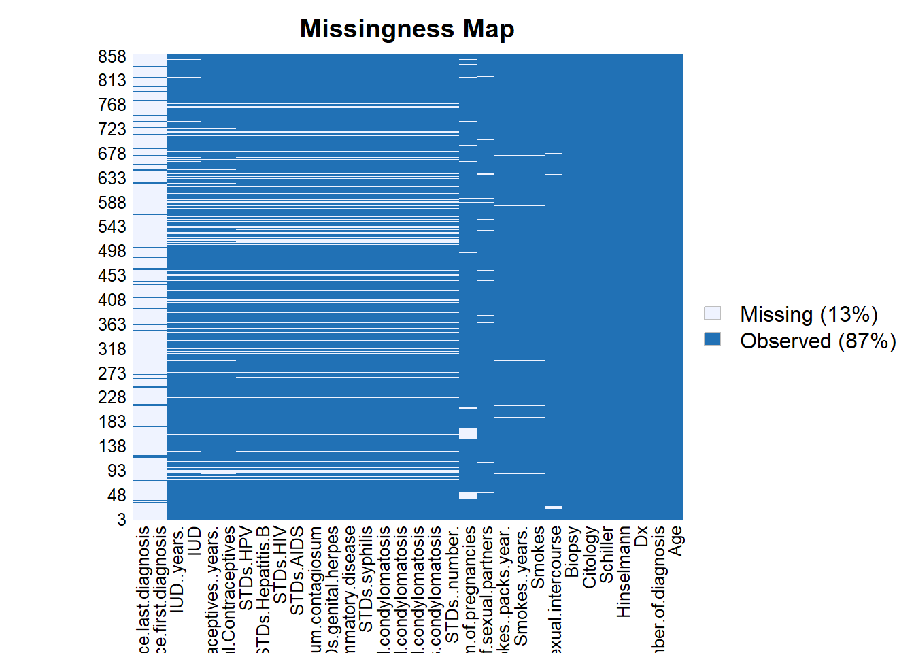
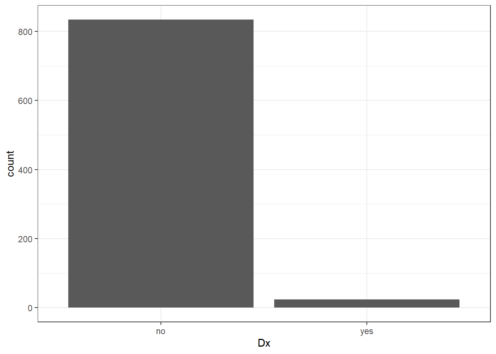
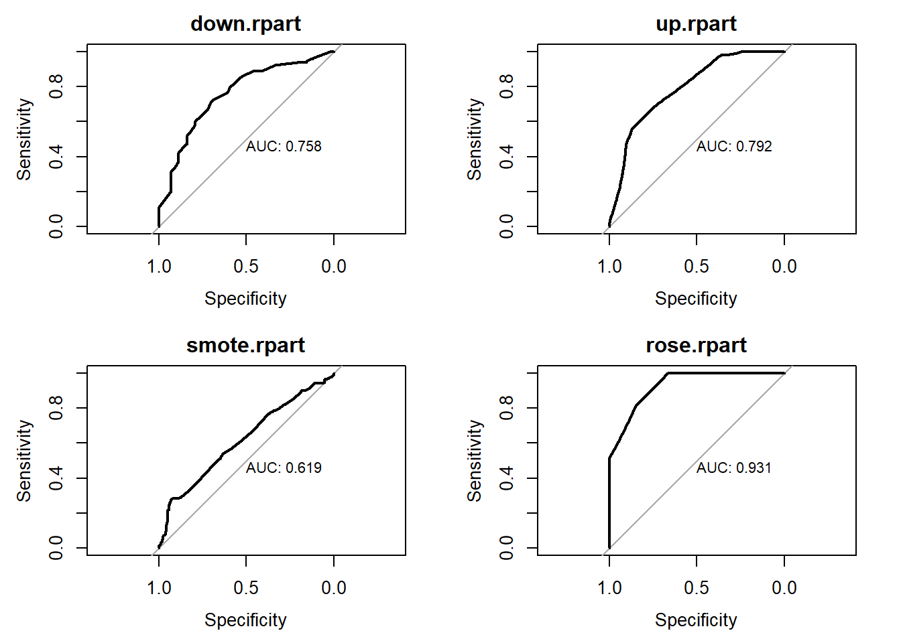
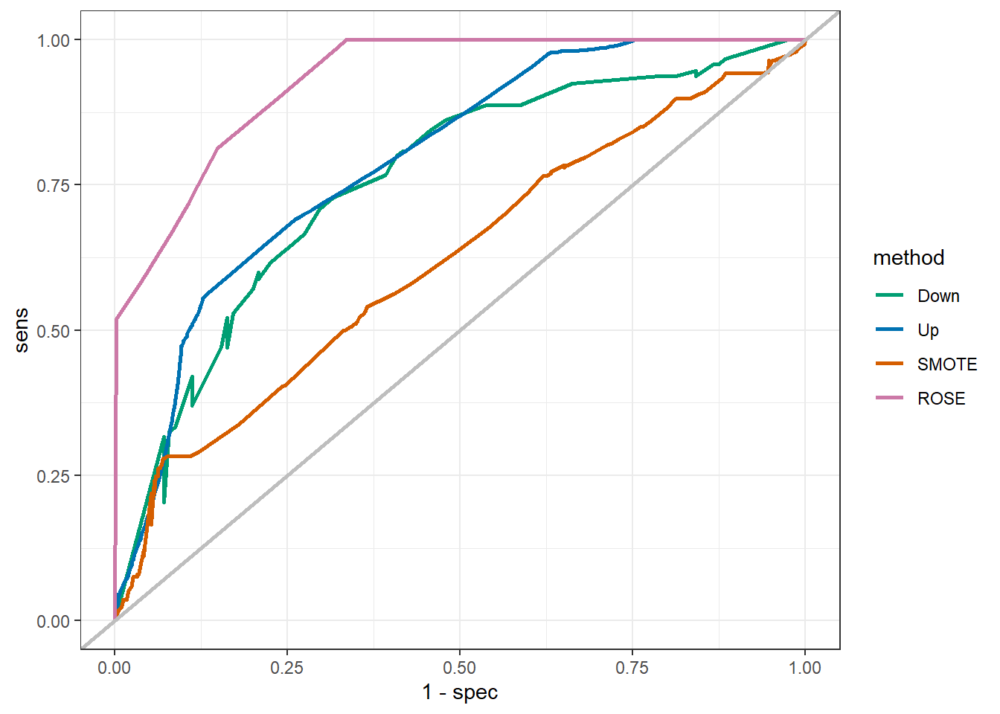
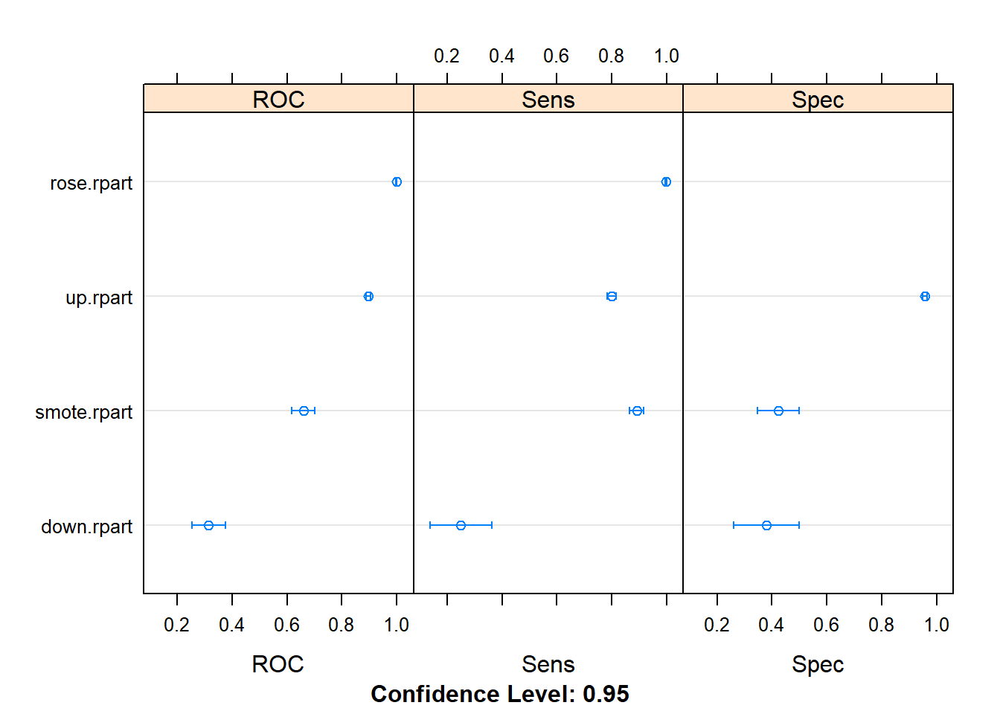

6.2 Dealing with imbalanced data: a practical approach
2020-06-02
6.2.1 Introduction
We define a dataset as imbalanced when the classification’s categories are not approximately equally represented. In real-world data ‘normal’ examples are the most frequent, while ‘abnormal’ or interesting’ examples are quite rare, that is why the problem of imbalanced data is so common (Chawla et al. 2002).
In real life there are several examples of imbalanced data:
- A manufacturing assembly line where the number of defective products are significantly lower than those without defects
- A test to detect patients with cancer in a given residential area
- Credit card fraud detection
Again, in classification problems where one class outnumbers the other we face a problem of imbalanced data. Usually, majority class is referred as negative class, while the minority is the positive class. For learning algorithms based on imbalanced data, positive class instances are submerged in the negative class (Gao et al. 2014).
Imbalances can be classified as intrinsic – when is a direct result of the nature of the dataspace – or extrinsic – when imbalance depends on upon variable factors as time and storage. As an example of this last type of imbalance, we can think on a continuous stream of intrinsically balanced data that at a specific time period (due to same kind of error) the acquired data can be imbalanced, and in this case the data set would be and intrinsic imbalanced data (He and Garcia 2009).
It is not appropriate to evaluate learning algorithms performance using its predictive accuracy when we are dealing with imbalanced data. In domains where we are interested is the positive class rather than the negative one, we need a higher prediction capability for the former, although traditional data mining algorithms do not behave properly in the instance of imbalanced data (Chawla et al. 2002). So, the main problems with imbalanced data arise when we want to learn from it. Imbalanced data compromise significantly the performance of most standard learning algorithms, this algorithms are not able to represent properly the distributive characteristics of the data and consequently fail to deliver acceptable accuracies across the classes of the data (He and Garcia 2009).
There are two major approaches to deal with imbalanced data: resampling methods (external methods) and imbalanced learning algorithms (internal methods) (Gao et al. 2014). The former uses resampling methods on the original imbalanced data in order to obtain a balanced input to train traditional learning algorithms. While the latter use modified learning algorithms so that are able to use original data without rebalance it (Gao et al. 2014).
6.2.2 Methods
In this study, I aim to identify and describe R packages available for dealing with imbalanced data. Also, for the exemplification on how to deal with imbalanced data, I use the Cervical cancer Data Set (CCDS) from UCI repository (Dua and Graff 2017).
A preliminary exploratory analysis is done in order to identify variables with excess of missing data, with the amelia package (Honaker, King, and Blackwell 2011). After excluding those variables with excessive number of missings, data is balanced for the outcome Dx with diferent methods and resulting balanced data is trained with a regression tree algorithm.
With the caret package I do the downsamplig (randomly subset the negative class to match the size of the positive class) and the upsampling (sampling with replacement from the positive class until match the size of the negative class). while, with SMOTE (DMwR package) and ROSE (rose package) methods, negative classs is down-sampled and the positive class is up-sampled.
All analysis is performed in RStudio with R programming lenguage (R Core Team 2013)
6.2.3 Results
A total of 11 packages were identified and 10 of them are on CRAN. The package IRIC is corrently only available on github. These packages represent a variaty of solutions to deal with imbalanced data. The packages caret, mlr and DMwR are packages for machine learning and data mining that include functions for balance imbalanced data.
| package | descriptive | description |
|---|---|---|
| ROSE | Random Over-Sampling Examples | The package provides functions to deal with binary classification problems in the presence of imbalanced classes. Synthetic balanced samples are generated according to ROSE (Menardi and Torelli, 2013). Functions that implement more traditional remedies to the class imbalance are also provided, as well as different metrics to evaluate a learner accuracy. These are estimated by holdout, bootstrap or cross-validation methods. |
| themis | Extra Recipes Steps for Dealing with Unbalanced Data | A dataset with an uneven number of cases in each class is said to be unbalanced. Many models produce a subpar performance on unbalanced datasets. A dataset can be balanced by increasing the number of minority cases using SMOTE 2011 <arXiv:1106.1813>, BorderlineSMOTE 2005 <doi:10.1007/11538059_91>; and ADASYN 2008 <https://ieeexplore.ieee.org/document/4633969>;. Or by decreasing the number of majority cases using NearMiss 2003 <https://www.site.uottawa.ca/~nat/Workshop2003/jzhang.pdf>; or Tomek link removal 1976 <https://ieeexplore.ieee.org/document/4309452>;. |
| imbalance | Preprocessing Algorithms for Imbalanced Datasets | Class imbalance usually damages the performance of classifiers. Thus, it is important to treat data before applying a classifier algorithm. This package includes recent resampling algorithms in the literature: (Barua et al. 2014) <doi:10.1109/tkde.2012.232>;; (Das et al. 2015) <doi:10.1109/tkde.2014.2324567>;, (Zhang et al. 2014) <doi:10.1016/j.inffus.2013.12.003>;; (Gao et al. 2014) <doi:10.1016/j.neucom.2014.02.006>;; (Almogahed et al. 2014) <doi:10.1007/s00500-014-1484-5>;. It also includes an useful interface to perform oversampling. |
| smotefamily | A Collection of Oversampling Techniques for Class Imbalance Problem Based on SMOTE | A collection of various oversampling techniques developed from SMOTE is provided. SMOTE is a oversampling technique which synthesizes a new minority instance between a pair of one minority instance and one of its K nearest neighbor. (see <https://www.jair.org/media/953/live-953-2037-jair.pdf>; for more information) Other techniques adopt this concept with other criteria in order to generate balanced dataset for class imbalance problem |
| ebmc | Ensemble-Based Methods for Class Imbalance Problem | Four ensemble-based methods (SMOTEBoost, RUSBoost, UnderBagging, and SMOTEBagging) for class imbalance problem are implemented for binary classification. Such methods adopt ensemble methods and data re-sampling techniques to improve model performance in presence of class imbalance problem. One special feature offers the possibility to choose multiple supervised learning algorithms to build weak learners within ensemble models. References: Nitesh V. Chawla, Aleksandar Lazarevic, Lawrence O. Hall, and Kevin W. Bowyer (2003) <doi:10.1007/978-3-540-39804-2_12>;, Chris Seiffert, Taghi M. Khoshgoftaar, Jason Van Hulse, and Amri Napolitano (2010) <doi:10.1109/TSMCA.2009.2029559>;, R. Barandela, J. S. Sanchez, R. M. Valdovinos (2003) <doi:10.1007/s10044-003-0192-z>;, Shuo Wang and Xin Yao (2009) <doi:10.1109/CIDM.2009.4938667>;, Yoav Freund and Robert E. Schapire (1997) <doi:10.1006/jcss.1997.1504>;. |
| unbalanced | Racing for Unbalanced Methods Selection | A dataset is said to be unbalanced when the class of interest (minority class) is much rarer than normal behaviour (majority class). The cost of missing a minority class is typically much higher that missing a majority class. Most learning systems are not prepared to cope with unbalanced data and several techniques have been proposed. This package implements some of most well-known techniques and propose a racing algorithm to select adaptively the most appropriate strategy for a given unbalanced task. |
| ebal | Entropy reweighting to create balanced samples | Package implements entropy balancing, a data preprocessing procedure that allows users to reweight a dataset such that the covariate distributions in the reweighted data satisfy a set of user specified moment conditions. This can be useful to create balanced samples in observational studies with a binary treatment where the control group data can be reweighted to match the covariate moments in the treatment group. Entropy balancing can also be used to reweight a survey sample to known characteristics from a target population. |
| IRIC | Integrated R Library for Imbalanced Classification | IRIC is an R library for imbalanced classification, which will bring convenience to users by integrating a wide set of solutions into one library. |
| caret | Classification and Regression Training | Misc functions for training and plotting classification and regression models. |
| mlr3 | Machine Learning in R - Next Generation | Efficient, object-oriented programming on the building blocks of machine learning. Provides ‘R6’ objects for tasks, learners, resamplings, and measures. The package is geared towards scalability and larger datasets by supporting parallelization and out-of-memory data-backends like databases. While ‘mlr3’ focuses on the core computational operations, add-on packages provide additional functionality. |
| DMwR | Functions and data for “Data Mining with R” | This package includes functions and data accompanying the book “Data Mining with R, learning with case studies” |
To evaluate the use of different methods for balance the date, I use the CCDS data.
Let’s load an look to the CCDS data:
library(tidyverse)
## read the data
dataset<-read.csv("2.UploadedData/risk_factors_cervical_cancer.csv",na.strings = c("NA","?",""))
# exclude redundante variable
dataset<-dataset %>% select(-STDs, -Dx.Cancer, -Dx.CIN, -Dx.HPV)
# identified categorical variables
categorical<-c("Smokes", "Hormonal.Contraceptives", "IUD",
"STDs.condylomatosis","STDs.cervical.condylomatosis",
"STDs.vulvo.perineal.condylomatosis", "STDs.syphilis",
"STDs.pelvic.inflammatory.disease",
"STDs.genital.herpes","STDs.molluscum.contagiosum",
"STDs.AIDS", "STDs.HIV", "STDs.Hepatitis.B", "STDs.HPV",
"Hinselmann", "Schiller", "Dx",
"Citology", "Biopsy")
# factorize it
dataset<-dataset %>% mutate_at(categorical, ~factor(.,levels = 0:1, labels = c("no","yes")))
Amelia package allow us to see how missing data are distributed on our dataset. Alternatively we can just count missings by variable.
## Age Number.of.sexual.partners
## 0 26
## First.sexual.intercourse Num.of.pregnancies
## 7 56
## Smokes Smokes..years.
## 13 13
## Smokes..packs.year. Hormonal.Contraceptives
## 13 108
## Hormonal.Contraceptives..years. IUD
## 108 117
## IUD..years. STDs..number.
## 117 105
## STDs.condylomatosis STDs.cervical.condylomatosis
## 105 105
## STDs.vaginal.condylomatosis STDs.vulvo.perineal.condylomatosis
## 105 105
## STDs.syphilis STDs.pelvic.inflammatory.disease
## 105 105
## STDs.genital.herpes STDs.molluscum.contagiosum
## 105 105
## STDs.AIDS STDs.HIV
## 105 105
## STDs.Hepatitis.B STDs.HPV
## 105 105
## STDs..Number.of.diagnosis STDs..Time.since.first.diagnosis
## 0 787
## STDs..Time.since.last.diagnosis Dx
## 787 0
## Hinselmann Schiller
## 0 0
## Citology Biopsy
## 0 0Do to the excessive among of missings, I excluded from the analysis, the variables STDs..Time.since.first.diagnosis and STDs..Time.since.last.diagnosis. Although it would be advised to do an imputation of values where we have missing data, I did’nt do it.
dataset<-dataset %>% select(-STDs..Time.since.first.diagnosis, -STDs..Time.since.last.diagnosis)
prop.table(table(dataset$Dx))| no | yes |
|---|---|
| 0.972028 | 0.027972 |
We will use this dataset to train a regression tree algorithm in order to predict the outcome Dx. But, we have a clear problem of imbalanced data if we want to predict Dx from which 97.2% are ‘no’ and only 2.8% are ‘yes’.

Now, I use four different methods to balance the data.
Let’s start balancing the data by downsampling (with the caret package):
library(caret)
set.seed(1)
down_train <- downSample(x = dataset[, !colnames(dataset) %in% "Dx"],
y = dataset$Dx)
# we have to remane the Class variable
names(down_train)[30]<-"Dx"
table(down_train$Dx)| no | yes |
|---|---|
| 24 | 24 |
Now the upsampling:
set.seed(1)
up_train <- upSample(x = dataset[, !colnames(dataset) %in% "Dx"],
y = dataset$Dx)
# we have to remane the Class variable
names(up_train)[30]<-"Dx"
table(up_train$Dx)| no | yes |
|---|---|
| 834 | 834 |
Is time for SMOTE:
library(DMwR)
set.seed(1)
smote_train <- SMOTE(Dx ~ ., data = dataset,
perc.over = 400,perc.under=200)
table(smote_train$Dx) | no | yes |
|---|---|
| 192 | 120 |
and now ROSE:
| no | yes |
|---|---|
| 346 | 322 |
With the new 4 datasets we can fit the regresssion trees
metric <- "ROC"
control <- trainControl(method = "repeatedcv",
number = 10,
repeats = 5,
summaryFunction=twoClassSummary,
classProbs=TRUE,
savePredictions = TRUE)
set.seed(2)
fit.rpart.down <- train(Dx ~ ., data=down_train,
method="rpart", metric=metric, trControl=control,
na.action=na.exclude)
set.seed(2)
fit.rpart.up <- train(Dx ~ ., data=up_train,
method="rpart", metric=metric, trControl=control,
na.action=na.exclude)
set.seed(2)
fit.rpart.smote <- train(Dx ~ ., data=smote_train,
method="rpart", metric=metric, trControl=control,
na.action=na.exclude)
set.seed(2)
fit.rpart.rose <- train(Dx ~ ., data=rose_train,
method="rpart", metric=metric, trControl=control,
na.action=na.exclude)And now we can compare the results.
fit.models <- list(down.rpart=fit.rpart.down,
up.rpart=fit.rpart.up,
smote.rpart= fit.rpart.smote,
rose.rpart= fit.rpart.rose)
results <- resamples(fit.models)Let’s look at the ROC curves
library(pROC)
par(mfrow=c(2,2))
# rocs <- lapply(fit.models, function(fit){plot.roc(fit$pred$obs,fit$pred$yes,
# #main=fit,
# debug=F, print.auc=T)})
for (i in 1:4){
plot.roc(fit.models[[i]]$pred$obs,fit.models[[i]]$pred$yes,
main= names(fit.models)[i],
debug=F, print.auc=T)}
we can also see it in one plot:
# combine the results
ggroc<-rbind(data.frame(method = "Down",
sens=roc(fit.rpart.down$pred$obs,fit.rpart.down$pred$yes)$sensitivities,
spec=roc(fit.rpart.down$pred$obs,fit.rpart.down$pred$yes)$specificities),
data.frame(method = "Up",
sens=roc(fit.rpart.up$pred$obs,fit.rpart.up$pred$yes)$sensitivities,
spec=roc(fit.rpart.up$pred$obs,fit.rpart.up$pred$yes)$specificities),
data.frame(method = "SMOTE",
sens=roc(fit.rpart.smote$pred$obs,fit.rpart.smote$pred$yes)$sensitivities,
spec=roc(fit.rpart.smote$pred$obs,fit.rpart.smote$pred$yes)$specificities),
data.frame(method = "ROSE",
sens=roc(fit.rpart.rose$pred$obs,fit.rpart.rose$pred$yes)$sensitivities,
spec=roc(fit.rpart.rose$pred$obs,fit.rpart.rose$pred$yes)$specificities)
)
custom_col <- c("#009E73", "#0072B2", "#D55E00", "#CC79A7")
ggplot(ggroc, aes(x= 1-spec, y= sens, group = method)) +
geom_line(aes(color = method), size = 1) +
scale_color_manual(values = custom_col) +
geom_abline(intercept = 0, slope = 1, color = "gray", size = 1) +
theme_bw()
And compare accuracies

In this exercise we obtained the best results with ROSE dataset. Although we can have a problem of overfitting.
6.2.4 Conclusion
Here, I presented some simple examples on how to deal with imbalanced data, with some pratical examples. There are more sophisticated methods available from the R packages presented on the table, but they require a more sophisticated data pre-processing.
In a real world work, before balance the data we must do a data partition between train and test datasets. Methods to balance the data must be done on training dataset and the trained model is applied on the imbalanced test set.
Real world framework
- do exploratory data analysis
- look for missing data
- exclude variables with more than 80% missings
- try to input data to other remaining missings
- do data partition between training data set and testing data set
- balance your training dataset
- train your algorithms with the training dataset
- test them in your testing dataset
- DO NOT balance your testing dataset

References
Chawla, Nitesh V., Kevin W. Bowyer, Lawrence O. Hall, and W. Philip Kegelmeyer. 2002. “snopes.com: Two-Striped Telamonia Spider.” Journal of Artificial Intelligence Research 16 (Sept. 28): 321–57. https://doi.org/10.1613/jair.953.
Dua, Dheeru, and Casey Graff. 2017. “UCI Machine Learning Repository.” University of California, Irvine, School of Information; Computer Sciences. http://archive.ics.uci.edu/ml.
Gao, Ming, Xia Hong, Sheng Chen, Chris J. Harris, and Emad Khalaf. 2014. “PDFOS: PDF estimation based over-sampling for imbalanced two-class problems.” Neurocomputing 138: 248–59. https://doi.org/10.1016/j.neucom.2014.02.006.
He, Haibo, and Edwardo A. Garcia. 2009. “Learning from imbalanced data.” IEEE TRANSACTIONS ON KNOWLEDGE AND DATA ENGINEERING 21 (9): 1263–83. https://doi.org/10.1007/978-3-030-04663-7_4.
Honaker, James, Gary King, and Matthew Blackwell. 2011. “Amelia II: A Program for Missing Data.” Journal of Statistical Software 45 (7): 1–47. http://www.jstatsoft.org/v45/i07/.
R Core Team. 2013. R: A Language and Environment for Statistical Computing. Vienna, Austria: R Foundation for Statistical Computing. http://www.R-project.org/.